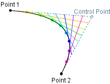

- java.lang.Object
-
- org.gannacademy.cdf.graphics.Drawable
-
- org.gannacademy.cdf.graphics.geom.QuadCurve
-
public class QuadCurve extends Drawable
Draw a quadratic Bézier curve

Refer to
CubicCurvefor a full explanation of the Bézier interpolation process (which explains what the control point does).- Author:
- Seth Battis
-
-
Field Summary
-
Fields inherited from class org.gannacademy.cdf.graphics.Drawable
NO_STROKE, TRANSPARENT
-
-
Constructor Summary
Constructors Constructor and Description QuadCurve(double x1, double y1, double controlX, double controlY, double x2, double y2, DrawingPanel drawingPanel)Construct a new quadratic Bézier curve
-
Method Summary
All Methods Instance Methods Concrete Methods Modifier and Type Method and Description Point2DgetCtrlPt()Control pointdoublegetCtrlX()X-coordinate of control pointdoublegetCtrlY()Y-coordinate of control pointPoint2DgetP1()Starting pointPoint2DgetP2()Ending pointprotected QuadCurve2DgetShapeAsQuadCurve()doublegetX1()X-coordinate of starting pointdoublegetX2()X-coordinate of ending pointdoublegetY1()Y-coordinate of starting pointdoublegetY2()Y-coordinate of ending pointvoidsetCurve(double x1, double y1, double ctrlX, double ctrlY, double x2, double y2)Replace the underlyingQuadCurve2DgeometryvoidsetHeight(double height)Adjust height of bounding boxvoidsetLocation(double x, double y)Translate the shape to a locationvoidsetShape(Shape shape)Replace the underlyingShapegeometry of the drawable componentvoidsetWidth(double width)Adjust width of bounding boxvoidtranslate(double dx, double dy)Translate the shape location-
Methods inherited from class org.gannacademy.cdf.graphics.Drawable
close, contains, contains, contains, contains, draw, finalize, getBounds, getDrawingPanel, getFillColor, getHeight, getLocation, getPathIterator, getShape, getStroke, getStrokeColor, getWidth, getX, getY, intersects, intersects, removeFromDrawingPanel, setDrawingPanel, setFillColor, setStroke, setStrokeColor, setX, setY
-
-
-
-
Constructor Detail
-
QuadCurve
public QuadCurve(double x1, double y1, double controlX, double controlY, double x2, double y2, DrawingPanel drawingPanel)Construct a new quadratic Bézier curve

All window coordinates are measured in pixels, with the X-axis increasing from left to right and the Y-axis increasing from top to bottom. All window coordinates exist in the first quadrant.

- Parameters:
x1- X-coordinate of starting pointy1- Y-coordinate of starting pointcontrolX- X-coordinate of control pointcontrolY- Y-coordinate of control pointx2- X-coordinate of ending pointy2- Y-coordinate of ending pointdrawingPanel- on which to draw
-
-
Method Detail
-
getShapeAsQuadCurve
protected QuadCurve2D getShapeAsQuadCurve()
- Returns:
- Underlying
QuadCurve2Dgeometry
-
setShape
public void setShape(Shape shape) throws DrawableException
Description copied from class:DrawableReplace the underlyingShapegeometry of the drawable component- Overrides:
setShapein classDrawable- Parameters:
shape- of geometry- Throws:
DrawableException- will be thrown ifshapeis not compatible with the component (e.g trying to redefine anArcas aLine)
-
setWidth
public void setWidth(double width)
Description copied from class:DrawableAdjust width of bounding box
-
setHeight
public void setHeight(double height)
Description copied from class:DrawableAdjust height of bounding box
-
getP1
public Point2D getP1()
Starting point- Returns:
- Coordinates of starting point
-
getP2
public Point2D getP2()
Ending point- Returns:
- Coordinates of ending point
-
setCurve
public void setCurve(double x1, double y1, double ctrlX, double ctrlY, double x2, double y2)Replace the underlying
QuadCurve2DgeometryReplacing the underlying geometry leaves other characteristics (fill, stroke) unchanged
- Parameters:
x1- X-coordinate of starting pointy1- Y-coordinate of starting pointctrlX- X-Coordinate of control pointctrlY- Y-coordinate of control pointx2- X-coordinate of ending pointy2- Y-coordinate of ending point
-
getX1
public double getX1()
X-coordinate of starting point- Returns:
- X-coordinate of starting point
-
getY1
public double getY1()
Y-coordinate of starting point- Returns:
- Y-coordinate of starting point
-
getCtrlX
public double getCtrlX()
X-coordinate of control point- Returns:
- X-coordinate of control point
-
getCtrlY
public double getCtrlY()
Y-coordinate of control point- Returns:
- Y-coordinate of control point
-
getCtrlPt
public Point2D getCtrlPt()
Control point- Returns:
- Coordinates of control point
-
getX2
public double getX2()
X-coordinate of ending point- Returns:
- X-coordinate of ending point
-
getY2
public double getY2()
Y-coordinate of ending point- Returns:
- Y-coordinate of ending point
-
translate
public void translate(double dx, double dy)Description copied from class:DrawableTranslate the shape location
-
setLocation
public void setLocation(double x, double y)Description copied from class:DrawableTranslate the shape to a location
- Specified by:
setLocationin classDrawable- Parameters:
x- coordinate of shape origin at new locationy- coordinate of shape origin at new location
-
-